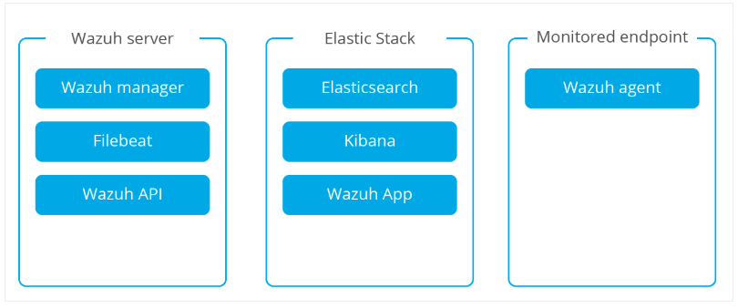

Wazuh
Wazuh is a free, open-source, and enterprise-ready security monitoring solution for threat detection, integrity monitoring, incident response, and compliance. The project was born as a fork of OSSEC HIDS.
Architecture

Note: For small scale (agent <50 ), Elastic stack and wazuh server can be installed and configure in a single node.
Wazuh Manager
The Wazuh Manager receives and analyzes data from the agents using decoders and rules that have been created to trigger security alerts. The manager is also used to distribute configuration files to the agents, to monitor their status and to send control messages to trigger automatic actions at the agent level.
Wazuh-API
The RESTful API provides an interface to manage and monitor the configuration of the manager and agents. It can be used to register agents, inspect the manager log messages, decoders and rules and provide useful information related to the agents, including their status, operating system details, and alerts related to file integrity monitoring and root checks.
filebeat
Filebeat is used in distributed architectures (where the Wazuh server and Elastic Stack live in different systems) to forward alerts data to Logstash.
Elasticsearch
Wazuh app is a Kibana plugin designed to display Wazuh related information providing a RESTful API web interface.
Elasticsearch is a highly scalable full-text search and analytics engine. It is used to index alerts data and historical agents status information.
Kibana is a flexible and intuitive web interface for mining, analyzing, and visualizing data.
Wazuh agents
The Wazuh agent runs on monitored systems and is in charge of collecting log and event data, performing policy monitoring scans, detecting malware and rootkits and triggering alerts when monitored files are modified.
Rootcheck performs rootkit and malware detection on every system where the agent is installed.
Log monitoring/analysis collects and analyzes system logs looking for any suspicious activity.
Syscheck runs periodically to check for changes to any configured file (or registry entry on Windows).
OpenSCAP is designed to check for weak and vulnerable applications and configurations.
Services check for troubleshooting
systemctl status wazuh-manager
systemctl status wazuh-api
systemctl status filebeat
systemctl staus elasticsearch
systemctl status kibana
/var/ossec/bin/ossec-control status
systemctl status wazuh-agent
Default configuration file
node -v # Node version
/var/ossec/api/configuration/auth # To set password for wazuh api user
/var/ossec/api/configuration/config.js # Wazuh-api configuration
/etc/filebeat/wazuh-template.json # Alerts template for Elasticsearch:
/usr/share/filebeat/module # Wazuh module for Filebeat
/etc/filebeat/filebeat.yml # Filebeat configuration file for Wazuh alerts to forward to Elasticsearch
/etc/elasticsearch/jvm.options # Heap memory (Xms1g, Xmx1g); set 50% of your total RAM
/etc/elasticsearch/elasticsearch.yml # Elasticsearch configuration
/var/log/elasticsearch/elasticsearch.log # log file for elastic search
/etc/kibana/kibana.yml # Kibana configuration file
/usr/share/kibana/plugins/wazuh/wazuh.yml # Adding API to kibana (host, username, password)
/var/ossec/etc/ossec.conf # Configuration for wazuh-agent
Default ports
wazuh api : 55000/tcp
filebeat : 9200/tcp
elasticsearch : 9300/tcp
kibana : 5601/tcp
You need to make sure that the version of Wazuh App for Kibana matches the version of Wazuh APi and Manager.
Pratik Gautam pratikgautm@gmail.com